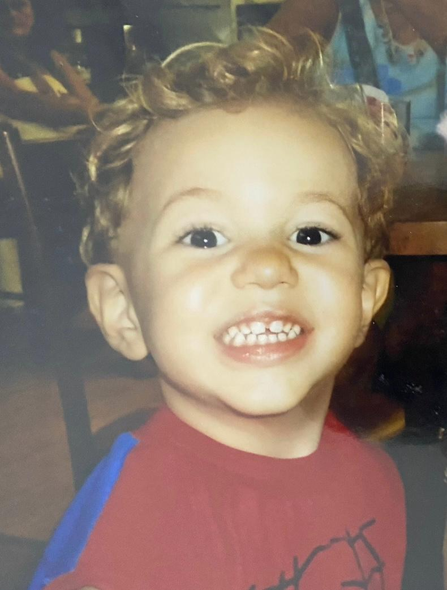
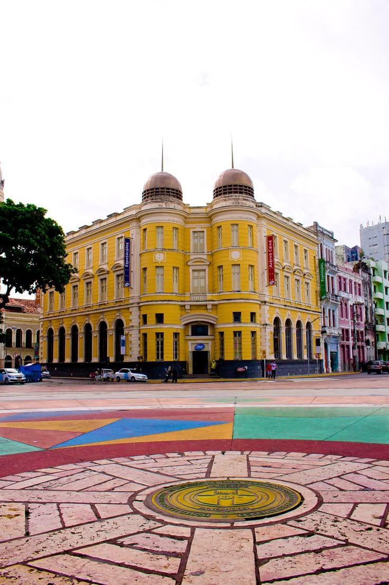
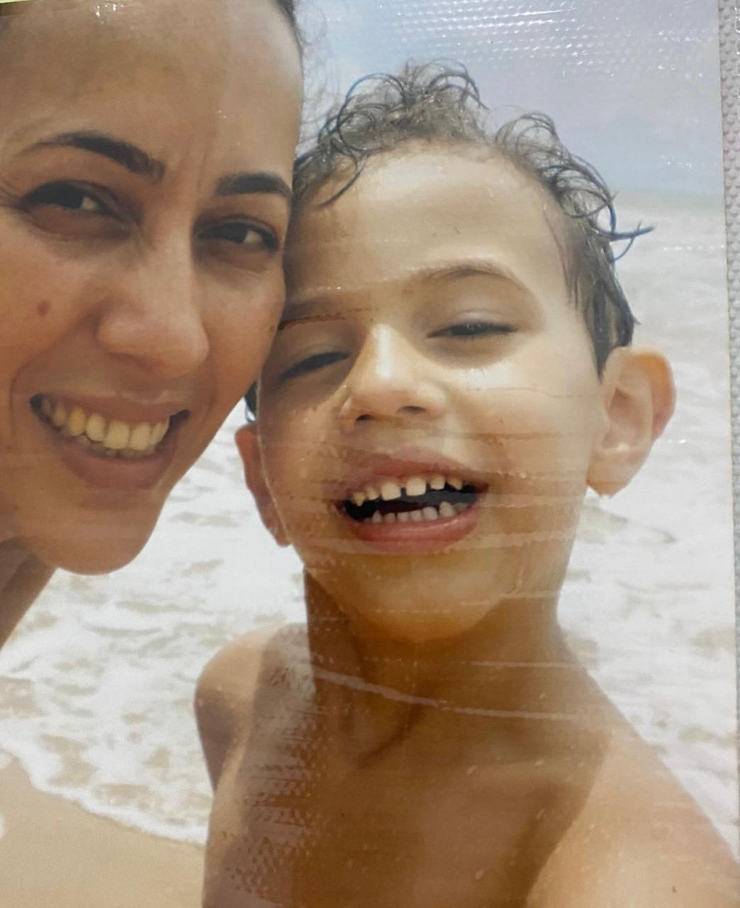

Quem sou eu?
Meu nome é Walter Maia Santiago Neto, em homenagem ao meu avô, que faleceu quatro anos antes de eu nascer. Sou uma pessoa amigável, simpática e profundamente inquieta com as injustiças sociais que vejo diariamente.
Curiosidades sobre minha vida
- Quase fui jogador de futebol profissional, joguei no Sport Club do Recife até os 15 anos.
- Sou Alvirrubro com orgulho!
- Adoro Python e programar projetos criativos.
- Faço farming de airdrops de criptomoedas com frequência.
- Tenho grande paixão por tecnologia com impacto social.
O que me move
Espero um dia poder contribuir e mudar o Brasil e minha cidade, Recife. A desigualdade de renda é um problema que me incomoda profundamente. Sonho em montar um time que, com responsabilidade e criatividade, ajude a resolver os problemas que ainda nos fazem ser chamados de "país subdesenvolvido".
Me entristece ver o centro do Recife abandonado, estruturas públicas vandalizadas, pessoas em situação de rua e sem perspectivas de mudança. Quero trabalhar para que a geração dos meus descendentes encontre um mundo mais justo e harmônico, onde todos tenham oportunidades reais.
Minhas inspirações e memórias
Waltinho aos 4 anos
Centro do Recife - Um lugar que desejo ver transformado
Minha mãe, minha fortaleza